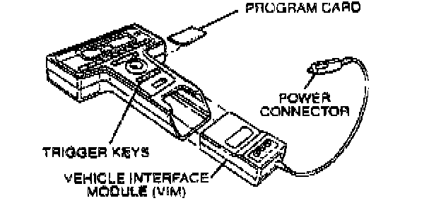
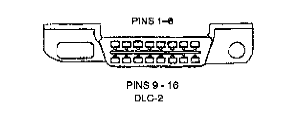
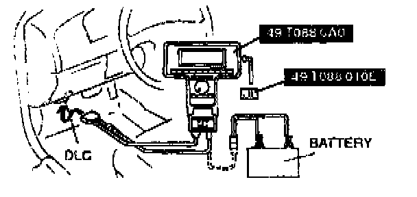

New Generation Star (NGS) Tester Hook-Up Procedure
NOTE:- Make sure the ignition switch is off.

1. Insert the vehicle interface module and latest program card into the hand-held NGS control unit.

2. Plug the NGS OBD-II adapter into the vehicle interface module and the large 16 pin connector into the vehicle data link connector-2 (DLC-2) located under the left side of the center console.

3. Plug the NGS tester power connector into the NGS OBD-II adapter power cable connector or cigarette lighter. Alternatively, enable to use a battery hook-up adapter.
4. Listen for a double beep. The NGS tester is now initialized. Begin the powertrain control system functional test.